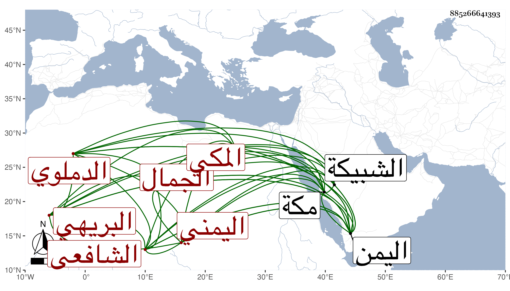

0902Sakhawi.DawLamic.ITO20230111-ara1.EIS1600.885266641393
Biography ID: 885266641393
83
محمد بن عبد الصمد بن أبي بكر بن عبد الرحمن بن محمد بن أبي بكر الجمال السكسكي البريهي بضم الموحدة مصغر الدملوي اليمني المكي الشافعي ويعرف بابن عبد الصمد . ولد سنة ثمان وثمانين وسبعمائة واشتغل في الفقه والنحو على أبيه وعمه وسمع ببلاد اليمن من النفيس العلوي وأخيه الجمال محمد والمجد اللغوي وابن الجزري وحج في سنة ثمان وعشرين وجاور بمكة التي تليها فسمع بها من الشمس البرماوي والجمال المرشدي والتقي بن فهد ولازم أولهم كثيرا في الفقه وأصوله وبحث عليه شرحه للألفية في الأصول وغيره ، وعاد إلى بلاده بعد حجه فيها أيضا واشتهر بالفضيلة ببلاد اليمن ، ثم حج في سنة ثلاث وخمسين وجاور التي تليها فقدرت وفاته بها فجأة في ظهر يوم الثلاثاء تاسع عشري جمادى الأولى سنة أربع وخمسين ودفن بالشبيكة رحمه الله وغفر له .
